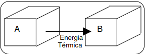

É a parte da Física que estuda como trocas de Calor entre que corpos estão
temperaturas diferentes. Calor: É a Energia Térmica, em trânsito, trânsito entre que possuem corpos diferentes
temperaturas.

A Energia Térmica Fornecina pelo corpo
A é recebida pelo corpo B até que eles possuam
a mesma temperatura, ou seja, Equilíbrio Térmico.
Corpos de diferentes temperaturas, ocorrerá a transferência de
Calor (Energia) entre eles. Transferência Essa de Energia até não houver mais a
diferença de temperatura entre eles.
Um exemplo e colocar um prato de comida quente e deixa-lo na mesa ele irá esfriar até chegar a temperatura ambiente, ou seja, o prato vai perder Energia para o
ambiente
A caloria (\(cal\)) é uma unidade de medida de energia térmica. Na física, ela é definida como a quantidade de calor necessária para elevar a temperatura de
\(1 g\) de água pura em \(1°C\).
Outra unidade de calor também muyito usada é o Joule e podemos fazer a conversão \(1 cal = 4,2 J\). Calor Sensível: É a quantidade de calor que um corpo cede ou recebe sofrendo variação de Temperatura \((\Delta T)\), sem mudar de estado Físico.
Equação fundamental da Calorimetria
$$Q = m \cdot c \cdot \Delta T$$
onde
\(Q\) é a quantidade de caloria
\(m\) é a massa
\(c\) calor especifico
\(\Delta T\) é variação da temperatura \(\Delta T = T_f - T_i \)
Problemas
Qual a quantidade de caloria necessária para ferver 5 litros de água para fazer chá no colégio?\(c_{agua} = 1cal/g°C\).